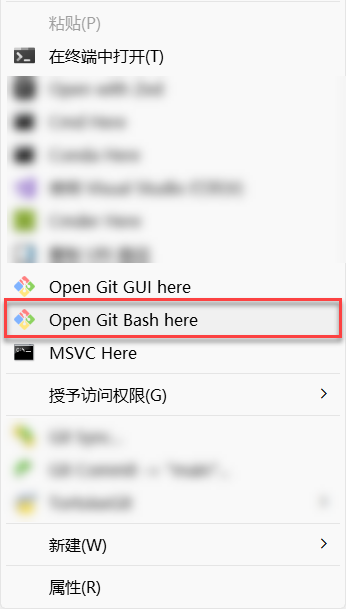
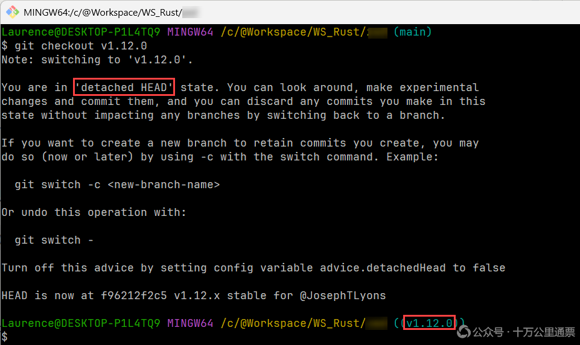
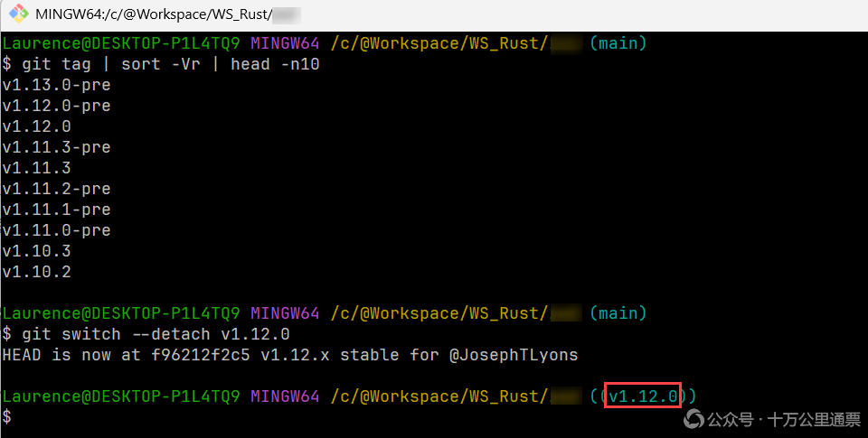
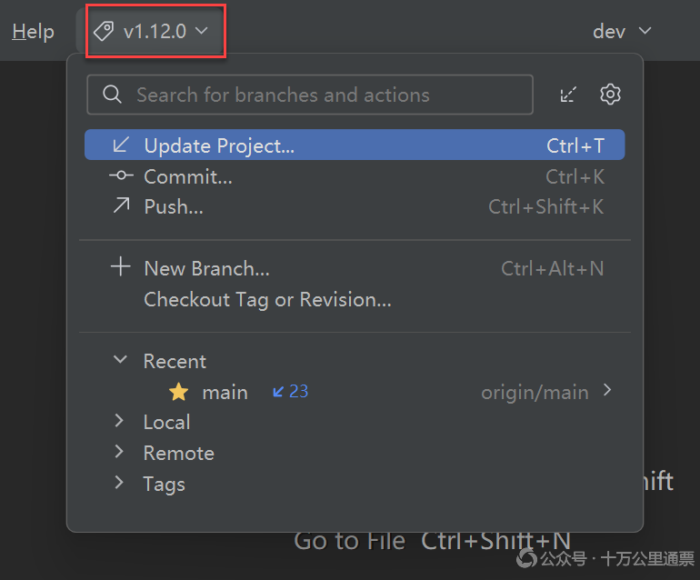
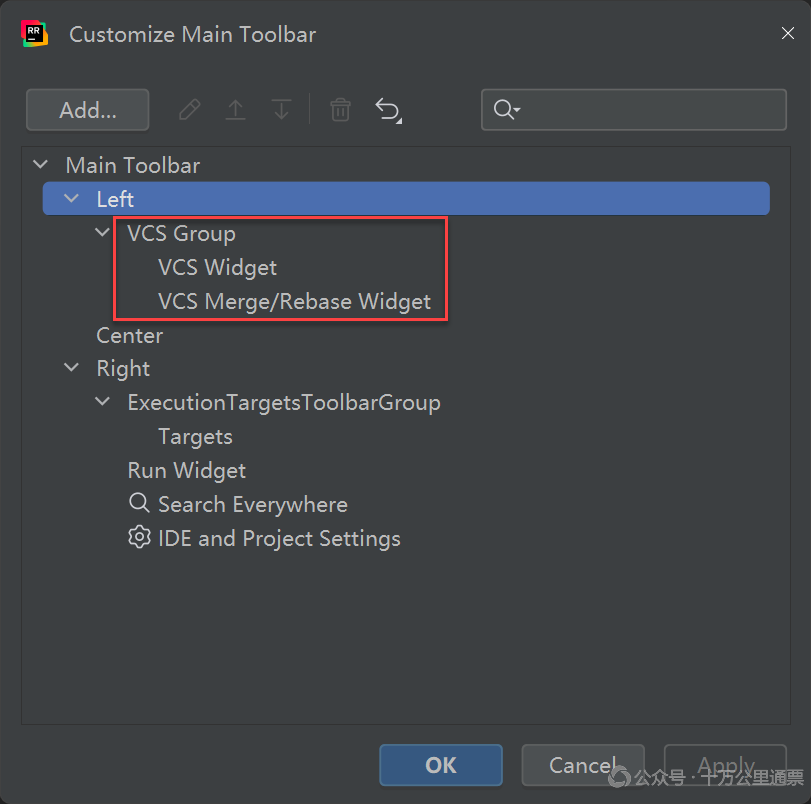
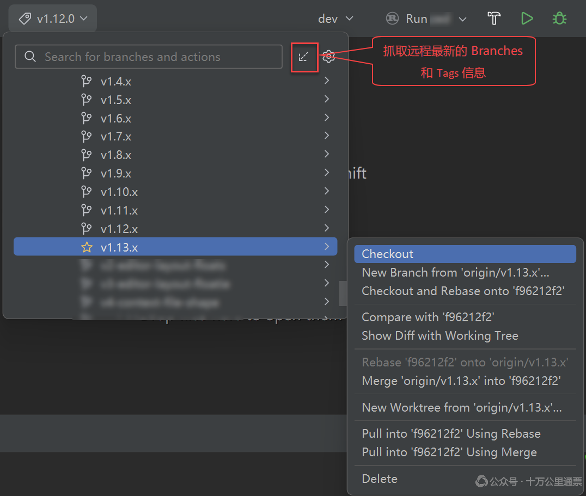
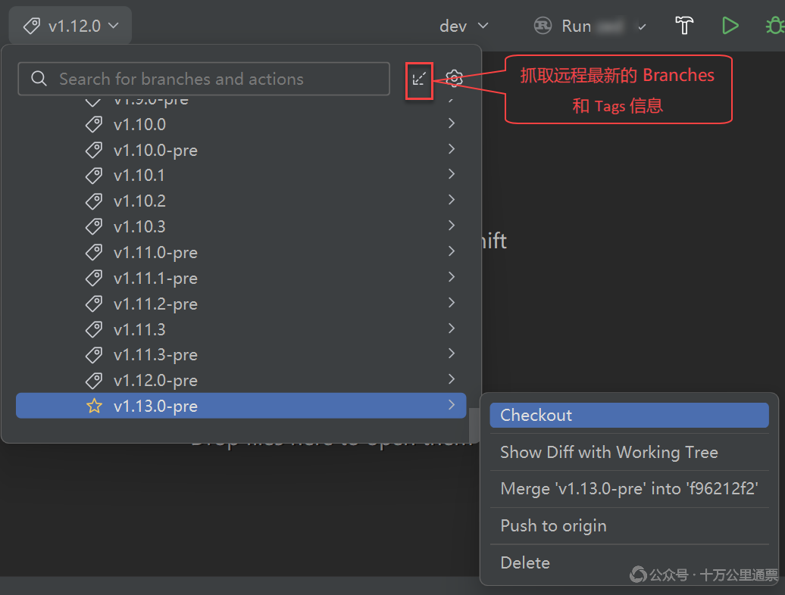

如何在大型项目中灵活切换 Git 的 Branch 和 Tag？

在阅读一些大型项目的源码时，我们需要在各种 branch 和 tag 之间切换，有一些事项需要注意。我们会分使用 Git 命令行和 IDE（IntelliJ IDEA / RustRover）两种情形讨论。其中， 在使用 Git 命令行时，建议使用 Git Bash ，在 Windows 上安装 Git 后，通常会在右键菜单中出现：

使用 Git Bash 而非 CMD 或 PowerShell 的原因是：我们的一些操作除了会使用到 git 命令之外，还会使用到一些 shell 命令用于查找和过滤结果（例如 sort、head 等命令），这些操作虽然在 Windows 上也可以通过 batch 或 PowerShell 实现，但实现起来很笨拙，远不及 shell 命令清爽和优雅 。
Git 自带的这个 Bash 环境对应的文件是 Git 安装目录下的 bin/bash.exe 文件，它运行在 Git for Windows 附带的 MSYS2 环境之上，MSYS2 是一个能让大量 Linux /Unix 程序能够在 Windows 上运行的兼容层和工具集。至于它有哪些 Linux 命令和工具，可以在 Git 安装目录下的 usr/bin/ 目录下看到各种 Linux 命令的 exe 版本，例如：cat.exe、grep.exe、sed.exe 等等。
1. Branch 基础操作
先了解几个 Branch 的基础操作，以便更好地理解后续针对特定场景下的操作。
1.1 查看所有本地分支
输出列表中使用 * 标记的就是当前 branch：
1 | git branch |
1.2 查看远程分支
1 | git branch -r |
如果 branch 非常多，默认会走系统分页器 less ，按空格/回车才翻页。如果想直接看到全部结果，可以永久全局关闭 git 分页：
1 | git config --global core.pager "" |
1.3 查看本地 + 远程全部分支
1 | git branch -a |
1.4 切换到指定 branch
1 | git switch YOUR_TARGET_BRANCH |
在 Git 2.23 之前，只能使用 git checkout YOUR_TARGET_BRANCH 切换 branch 或 tag，但因 checkout 承担了很多完全不同的职责，在 Git 2.23（2019）之后专门为“切换分支”引入了新命令 git switch 。
2. Tag 基础操作
再了解几个 Tag 的基础操作，以便更好地理解后续针对特定场景下的操作。
2.1 查看本地已有 tag
此命令看不到远程新增的 tag：
1 | git fetch --tags |
2.2 查看所有远程 tag
1 | git ls-remote --tags origin |
2.3 切换到指定 tag
1 | git switch --detach YOUR_TARGET_VERSION |
同样的，在 Git 2.23 之前，只能使用 git checkout YOUR_TARGET_VERSION 切换到指定的 tag，如果使用 checkout 命令，会看到这样的提示：

这里有一个细节要注意：使用 checkout 切换到一个特定版本后，项目就将处于 detached HEAD 状态了，而使用 git switch --detach 是主动脱离，不会出现警告信息。这里解释一下什么是 detached HEAD ：在 Git 里，HEAD 相当于一个指针，永远指向“我当前正在工作的提交”，通常情况下，HEAD 指向的都是某个 Branch 的头部，但是，当我们检出一个特定的版本后，HEAD 就指向了一个历史版本，而不在依附于任何一个 branch 上了，此时，我们就说 HEAD 已经是 detached 的了，这里的“脱离”指的是从一个 branch 上脱离了，如果我们在这种状态下（也就是某个历史版本上）提交代码，代码可能会丢失，因为这个时候的 HEAD 已经和 branch 脱离了关系，原来的提交不再有任何指向它的引用，它就会被自动清除。
2.4 查找最新 Tag
按版本号，从大到小排列，列出前 10 个最新的版本：
1 | git fetch --tags |
其中， git fetch --tags 是将远程最新的 tags 信息同步到地的远程镜像（ origin/* ），相当于同步一下远程的 tags 元数据，并本地代码库无任何影响。
3. 典型场景
我们以研读大型项目的源码为场景，介绍一下 Git 的相关操作。大型项目有这样一些特点：
-
branch 和 tag 众多，通常我们需要快速找到最新的 branch 或 tag
-
项目更新频繁，每过一段时间就会发布新的小版本，需要跟进切换到最新版本
3.1 检出项目，切换到最新版本研读代码
检查项目后，使用如下命令列出前 10 个最新的版本：
1 | git fetch --tags |
然后选中你想要的版本号，执行命令：
1 | git switch --detach YOUR_TARGET_VERSION |
命令执行成功之后，回车，新开一行，命令提示符末尾显示的就切换后的版本了：

3.2 远程项目更新，切换到新的版本继续研读
假设我们研读了一段时间后，项目发布了一个新的版本，我们想切换到新版本上继续研读。这时候，很多人可能会先想到使用 git pull 把本地库同步到最新状态，然后再切换到新版本，但其实在执行 pull 命令时就会报错：
You are not currently on a branch. Please specify which branch you want to merge with.
原因就在于当前处于一个特定版本上，是 detached HEAD 状态，并不在任何一个 branch 上，但 pull 操作必须知道当前正处于哪个 branch 上，因为操作失败了。这里有两种正确的做法：
方法一：切回 main 分支，更新代码后，再次切到最新版本
1 | git switch main |
切回主分支 拉取 新代码后，通常就能看到新的 tag 了。如果报 error: invalid reference: vx.x 错误，是因为某些配置导致没有主动拉取 tag 信息，此时可以手动拉取一次： git fetch --tags 。
方法二：拉取最新的 tags 列表，直接检出到目标版本
1 | git fetch --tags |
这种方式更直接，检出的代码量也会少一些。它不像上一种方法会全面更新代码库。
4. 在 IDE 中操作
现在我们介绍一下在 IDE，主要是 Jetbrain 系的产品，如 IntelliJ IDEA / RustRover 等工具中如何配置。
4.1 在 Main Toolbar 中启用 VCS Group
这不是一项的必须的操作，普通场景下，很多人都会清理掉 Main Toolbar 中的各种工具，以使得界面整洁一些。但如果要经常在不同版本之间切换的话，还是非常有必要把 VCS Group 添加到 Main Toolbar 中，因为这个小组件可以清晰地展示项目当前所处的分支或版本：

添加这个组件的方法是：菜单栏空白处呼出右键菜单 -> 点击 Customize Toolbar -> 选中 left 呼出右键菜单 -> 点击 Add Actions -> 搜索 VCS Group -> 选中并点击下方 OK 按钮，添加后的 Customize Toolbar 是这样的：

4.2 在 IDE 中切换 Branch
在 Main Toolbar 中启用了 VCS Group 后，操作就简单多了。在 VCS Group 的下拉列表框中依次展开：Remote -> Origin ，然后在下拉列表中找到目标 Branch，然后右键，选择 Checkout 就可了：

如果没有发现最新的 Branch，可以点击右上角的一个指向左下方的箭头图表（上图标注的地方），就可以从远程抓取最新的 Branches 和 Tags 信息。如果分支过多，可以使用搜索搜索，在这一点上，IDE 不如命令行的地方在于：我们没有办法对 Branches 和 Tags 进行排序。
4.3 在 IDE 中切换 Tag
在 IDE 中切换 Tag 与切换 Branch 的操作类似。在 VCS Group 的下拉列表框中展开 Tags，然后在下拉列表中找到目标 Tag，然后右键，选择 Checkout 就可了：

如果没有发现最新的 Tag，可以点击右上角的一个指向左下方的箭头图表（上图标注的地方），就可以从远程抓取最新的 Branches 和 Tags 信息。如果分支过多，可以使用搜索搜索，在这一点上，IDE 不如命令行的地方在于：我们没有办法对 Branches 和 Tags 进行排序。
如何在大型项目中灵活切换 Git 的 Branch 和 Tag？
https://laurence.enlightgram.com/others/git-switch-branch-and-tag/